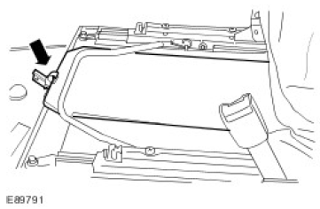
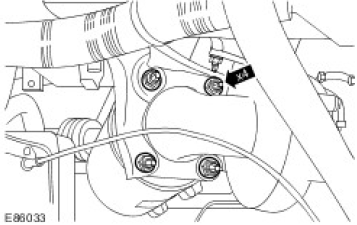
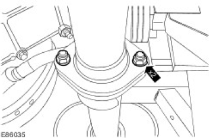
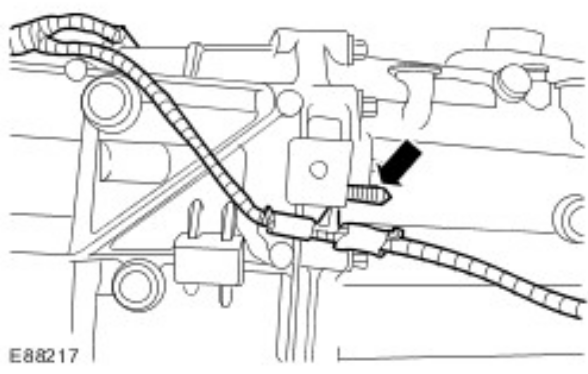
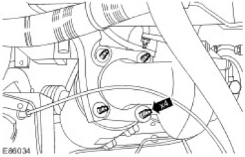

Published: Feb 26, 2008
Specifications
Lubricants, Fluids, Sealers and Adhesives
| Item | Specification |
|---|---|
| Manual transmission fluid | WSD-M2C200-C |
| Super DOT 4 brake fluid | ESD-M6C57-A |
| Sealant | WSS-M2G348-A10 |
| Grease | ESD-M1C220-A |
Capacities
| Capacities | Litres |
|---|---|
| MT82 transmission - Initial fill | 2.4 |
| MT82 transmission - Service fill | 2.2 |
| Description | Nm | lb-ft |
|---|---|---|
| Gearshift yoke securing nut | 12 | 9 |
| Clutch slave cylinder bolts | 11 | 8 |
| Reversing lamp switch | 20 | 15 |
| Transmission extension housing bolts | 25 | 18 |
| Transfer case bolts | 45 | 33 |
| Transmission bolts | 40 | 30 |
| RH transmission mount nut* | 30 | 22 |
| RH transmission mount bolts+ | 63 | 46 |
| LH transmission mount nut* | 30 | 22 |
| LH transmission mount bolts+ | 63 | 46 |
| Starter motor bolts | 35 | 26 |
| Fuel line support bracket nut | 9 | 7 |
| Clutch slave cylinder hose from the mounting bracket nut | 25 | 18 |
| Transmission wiring harness bracket nut and bolt | 47 | 35 |
| Transfer case breather pipe | 15 | 11 |
| RH earth cables to the transfer case bolt | 9 | 7 |
| LH earth cable to the transfer case nut | 45 | 33 |
| Rear driveshaft to the transfer case nut | 50 | 37 |
| Tail pipe to the intermediate pipe nut | 25 | 18 |
*If re-using nuts on vehicles built prior to VIN732932, tighten to 48 Nm. If replacing nuts, tighten to 30 Nm. +If re- using bolts on vehicles built prior to VIN732932, tighten to 85 Nm. If replacing bolts, tighten to 63 Nm.
Transmission Draining and Filling (37.24.01)
-
 WARNING: Do not work on or under a vehicle supported only by a jack. Always support the vehicle
on safety stands.
WARNING: Do not work on or under a vehicle supported only by a jack. Always support the vehicle
on safety stands.Raise and support the vehicle.
-
NOTE: The oil should be drained when the transmission is warm and the vehicle is standing on a level surface.
Position a container to collect the oil.
- Clean the area surrounding the transmission drain plug.
- Remove the transmission drain plug.
- Allow the oil to drain.
 Transmission drain plug (E90706)
Transmission drain plug (E90706) - Clean transmission drain plug.
- Install the transmission drain plug and clean any oil residue from the surrounding area.
- Tighten to 50 Nm (37 lb.ft).
- Clean the area surrounding the transmission filler plug.
- Remove the transmission filler plug.
- Fill the transmission with the correct grade of oil.
Specifications

- Install the transmission filler plug and clean any oil residue from the surrounding area.
- Tighten to 35 Nm (26 lb.ft).
- Remove the container.
- Lower the vehicle.
Manual Transmission - Vehicles With: 6-Speed Manual Transmission (MT82)
COMPONENT LOCATION

| Item | Part Number | Description |
|---|---|---|
| 1 | Transfer box assembly | |
| 2 | Transmission extension case | |
| 3 | Transfer box selector lever | |
| 4 | Gear selector lever | |
| 5 | Transmission front casing | |
| 6 | Breather pipe | |
| 7 | Transmission housing | |
| 8 | Transmission park brake |
OVERVIEW
The MT82 manual transmission has 6 forward gears and a reverse. It is mounted longitudinally and has a maximum torque capacity of 360Nm. The aluminium die-cast transmission housing is bolted to the transfer box via an aluminium die-cast extension case.
The 6th gear ratio has been selected as an overdrive for economy and comfort at higher vehicle speeds. Optimum
gear steps ensure highly fuel-efficient utilisation of the engine torque. This 6-speed transmission provides a wide ratio spread supporting both economy and drivability (e.g. low speed maneuvering/trailer towing).
The name MT82 is derived from the distance between the 2 shafts in the transmission:
- M stands for manual
- T stands for transmission
- 82 is the distance between the 2 shafts in milimeters (mm)

The transmission is a fill for life unit and no level check is required at service unless a leak is present.
Technical Data
| Input Torque | Ratios | Dry Weight | Oil fill | Oil Specification | ||||||
|---|---|---|---|---|---|---|---|---|---|---|
| 1st | 2nd | 3rd | 4th | 5th | 6th | Rev | ||||
| 360Nm | 5.441 | 2.840 | 1.721 | 1.223 | 1.00 | 0.742 | 4.935 | 50.8 kg | 2.4L | WSD-M2C200-C |
The input and output shafts are directly connected in 5th gear. This produces a gear ratio of 1:1.
Model Plate Label

| Item | Part Number | Description |
|---|---|---|
| 1 | Replacement part number |
| 2 | Place of manufacture (Halewood) |
|---|---|
| 3 | Vehicle build date |
| 4 | Build time |
The model plate is located on the Right Hand (RH) side of the transmission, near the driveshaft drive flange.
It is only used to identify the transmission. All spare parts orders are still made using the Vehicle Identification number (VIN).
INPUT SHAFT

| Item | Part Number | Description |
|---|---|---|
| 1 | 5th gear synchroniser ring | |
| 2 | Splined synchroniser, 5th gear | |
| 3 | Output shaft pilot bearing | |
| 4 | Input shaft | |
| 5 | Bearing retaining plate | |
| 6 | Ball bearing circlip | |
| 7 | Input shaft ball bearing |
The input shaft is rotationally mounted in the output shaft on the pilot bearing (3). In order to absorb the axial forces, the input shaft ball bearing (7) is additionally secured.
All the components on the input shaft can be serviced separately.
LAYSHAFT

| Item | Part Number | Description |
|---|---|---|
| 1 | Retaining bolt | |
| 2 | Ball bearing, layshaft | |
| 3 | Retaining plate - bearing | |
| 4 | Input pinion, layshaft | |
| 5 | Gear - 6th gear | |
| 6 | Gear wheel - 3rd gear | |
| 7 | 3rd gear synchroniser cone | |
| 8 | Inner synchroniser ring | |
| 9 | Outer synchroniser ring - 3rd gear | |
| 10 | Needle bearing | |
| 11 | Snap ring | |
| 12 | 3rd/4th gear synchroniser assembly | |
| 13 | Outer synchroniser ring - 4th gear | |
| 14 | Inner synchroniser ring | |
| 15 | 4th gear synchroniser cone | |
| 16 | Gear wheel - 4th gear | |
| 17 | Needle bearing | |
| 18 | Centre bearing, layshaft | |
| 19 | Layshaft | |
| 20 | Roller bearing, layshaft | |
| 21 | Reverse gear idler |
The layshaft transfers the torque from the input shaft onto the output shaft. Gear wheels and gears and the 3rd/4th gear synchroniser assembly are located on the shaft. First, 2nd and reverse gears are an integral part of the shaft.
The layshaft gearwheels and gears can be replaced individually. Because of improved manufacturing tolerances, it is no longer necessary to change the gears and gear wheels in pairs.
The layshaft is a solid shaft. In order to prevent the shaft from moving axially, it is additionally secured with a retaining bolt (1) and a bearing retaining plate (3).
The rotational direction of the output shaft is reversed by the use of the reverse gear idler (21).
OUTPUT SHAFT

| Item | Part Number | Description |
|---|---|---|
| 1 | Snap ring | |
| 2 | 5th/6th gear synchroniser assembly | |
| 3 | 6th gear synchroniser ring | |
| 4 | Splined synchroniser, 6th gear | |
| 5 | Gear wheel - 6th gear | |
| 6 | Needle bearing | |
| 7 | Output shaft | |
| 8 | Centre bearing - output shaft | |
| 9 | Needle bearing | |
| 10 | Gear wheel - 2nd gear | |
| 11 | 2nd gear synchroniser cone | |
| 12 | Inner synchroniser ring | |
| 13 | Outer synchroniser ring - 2nd gear | |
| 14 | Snap ring | |
| 15 | Ball bearing, output shaft | |
| 16 | Retaining plate - bearing | |
| 17 | Reverse gear synchroniser assembly | |
| 18 | Reverse gear synchroniser ring | |
| 19 | Gear wheel - reverse gear | |
| 20 | Needle bearing | |
| 21 | Inner race - needle bearing | |
| 22 | Needle bearing | |
| 23 | Gear wheel - 1st gear | |
| 24 | 1st gear synchroniser cone | |
| 25 | Inner synchroniser ring - 1st gear | |
| 26 | Outer synchroniser ring - 1st gear | |
| 27 | 1st/2nd gear synchroniser assembly |
The output shaft transfers torque through the output flange, to an extension shaft connected to the transfer box. 1st,
2nd, 6th and reverse gear wheels are located on the output shaft. 3rd and 4th gears are an integral part of the output shaft.
In a similar way to the input shaft, there is a splined synchroniser (4) pushed on the 6th gear gear wheel. This makes it possible to transfer the torque in 6th gear.
The output shaft gearwheels and gears can be replaced individually.
TRIPLE SYNCHRONISER ASSEMBLY

| Item | Part Number | Description |
|---|---|---|
| 1 | 1st/2nd gear synchroniser assembly | |
| 2 | Outer synchroniser ring | |
| 3 | Inner synchroniser ring | |
| 4 | Synchroniser cone | |
| 5 | Gear wheel | |
| 6 | Conical surface |
The Synchronisation assembly consists of 3 friction surfaces. The total friction surface of triple synchronisation is considerably increased by the additional conical surface (6). This leads to a reduction in the force needed to change into 1st or 2nd gear.
As the conical surface is part of the gear wheel, there is no need for an additional synchroniser ring.
SYNCHRONISER ASSEMBLY

| Item | Part Number | Description |
|---|---|---|
| 1 | Sliding block assembly | |
| 2 | Synchroniser hub | |
| 3 | Sliding collar |
The pressure springs and detent balls of the sliding blocks are combined in one unit.
REVERSE GEAR IDLER

| Item | Part Number | Description |
|---|---|---|
| 1 | Mounting | |
| 2 | Reverse gear idler shaft | |
| 3 | Needle bearing | |
| 4 | Reverse gear idler | |
| 5 | Retaining bolt - reverse gear mounting |
The reverse gear idler allows the direction of rotation of the output shaft to be reversed. The reverse gear idler turns on a needle bearing, which runs on the reverse gear idler shaft. The shaft is retained by the mounting (1) and a locating bore in the transmission housing.
In order to absorb the radial forces, the reverse gear idler runs on an additional mounting.
If the reverse gear idler can be replaced as an individual unit.
Published: Apr 29, 2009
Selector Shaft Detents
Special Service Tools


Removal
- Remove the transmission.
For additional information, refer to Transmission (37.20.02.99) -
 CAUTION: Make sure area surrounding component is clean.
CAUTION: Make sure area surrounding component is clean.Assemble the special tools.
 Special tools assembly (E118827)
Special tools assembly (E118827)
-
CAUTION: Make sure area surrounding component is clean.
Using the special tools, remove the selector rod detents.
 Selector rod detents removal (E118825)
Selector rod detents removal (E118825)
Installation
- Make sure all gear selector rods are aligned as shown and the gear selector linkage is free to move.
-
CAUTION: Make sure area surrounding component is clean.NOTE: New selector rod detents must be seated flush with transmission casing as necessary.
Using a suitable and , install the selector rod detents.


- Install the transmission.
For additional information, refer to Transmission (37.20.02.99)
Published: Apr 14, 2008
Transmission (37.20.02.99)
Special Service Tools


Removal
- Open the front door.
- Remove the front seat cushion assembly.
For additional information, refer to Front Seat Cushion (78.10.12/99) - Remove the battery cover.
- Release the clip.

- Disconnect the battery ground cable.
For additional information, refer to Battery Disconnect and Connect - Remove centre floor console.
For additional information, refer to Floor Console (76.25.01) - Remove the transmission cover panel carpet.
- Release the gear selector lever gaiter.
- Release the gear selector lever gaitor from the transmission tunnel.
- Release the gear selector lever gaiter from the high-low selector lever.
 Gear selector lever gaiter release (E88812)
Gear selector lever gaiter release (E88812) -
WARNING: The gearshift lever knob will be released suddenly, keep face clear during
removal. Failure to follow this instruction may result in personal injury.
Remove the upper gear change lever.


- Remove the gear selector lever gaiter.
- Disconnect the reversing lamp switch electrical connector.
- Open bonnet for access.
- Remove the turbocharger heat shield.
- Remove the 5 bolts.
 Turbocharger heat shield bolts (E86031)
Turbocharger heat shield bolts (E86031) - Remove the 4 catalytic converter securing studs.


-
WARNING: Do not work on or under a vehicle supported only by a jack. Always support
the vehicle on safety stands.
Raise and support the vehicle.
- Release the high-low selector rod ball joint from the transfer gearbox.
- Lower the vehicle.
- Open the front door.
- Remove the foam pad from around the selector levers.
- Remove the 4 high-low selector lever securing bolts.
- Remove the high-low selector lever.
- Remove the 4 gear selector housing securing bolts.


-
NOTE: Left-hand side shown, right-hand side similar.
Remove the chassis cross member.
- Remove the 8 bolts.
 Chassis cross member bolts (E86030)
Chassis cross member bolts (E86030) - Remove the front driveshaft.
For additional information, refer to Front Driveshaft (47.15.02) - Remove the 2 catalytic converter to intermediate pipe securing nuts.
- Remove the 2 catalytic converter mounting bracket securing bolts.


- Remove the catalytic converter.
- Remove the tailpipe and muffler, to intermediate pipe securing nuts.
- Remove the intermediate pipe and muffler.
- Displace and reposition the rear driveshaft.
- Mark the position of the driveshaft in relation to the drive pinion flange.
- Remove the rear driveshaft to transfer gearbox securing nuts.
 Rear driveshaft nuts (E88190)
Rear driveshaft nuts (E88190) - Using a suitable tie strap, secure the rear driveshaft to the chassis.


- Remove the parking brake drum.
- Remove the securing screw.
 Parking brake drum securing screw (E101488)
Parking brake drum securing screw (E101488) - Remove the parking brake assembly and tie aside.
- Disconnect the electronic speedometer drive electrical connector from the transfer gearbox.
- Remove the nut and disconnect the LH earth cable from the transfer gearbox.


- Remove the bolt securing the RH earth cables from the transfer gearbox.
- Displace and reposition the high-low detection switch electrical connector away from the transfer gearbox.
- Disconnect the high-low detection switch electrical connector.
 High-low detection switch electrical connector (E88197)
High-low detection switch electrical connector (E88197) - Disconnect the differential lock detection switch electrical connector.
- Release the electrical connector from the bracket.
 Differential lock detection switch electrical connector (E88198)
Differential lock detection switch electrical connector (E88198) - Release the breather pipe from transfer gearbox.
- Remove the securing bolt.


- Remove and discard the 2 sealing washers.
- Remove the transmission harness retaining bracket securing nut and bolt and reposition the harness.
- Release the transmission wiring harness connector and bracket from the RH side of the transmission.
- Release the transmission wiring harness securing clip from the LH side of the transmission.
- Release the transmission wiring harness securing clip from the RH side of the transmission.




- Release the transmission wiring harness securing clip from the top of the transmission.
- Remove the clutch slave cylinder fluid hose mounting bracket securing nut and bolt.
- Install a suitable pipe clamp to the clutch slave cylinder fluid hose.
 Clutch slave cylinder fluid hose mounting bracket (E88214)
Clutch slave cylinder fluid hose mounting bracket (E88214) -
CAUTION: Make sure that all openings are sealed. Use new blanking caps.
Disconnect the clutch slave cylinder fluid hose from the clutch slave cylinder.
- Remove the clutch slave cylinder line clip.
- Remove and discard the O-ring seal.
 Clutch slave cylinder fluid hose disconnection (E88215)
Clutch slave cylinder fluid hose disconnection (E88215)

- Install the special tool HTJ1200-02 to the transmission and transfer gearbox.
- Remove the LH transmission mount and mounting bracket.
- Remove the LH transmission mount and mounting bracket securing nuts and bolts.
 LH transmission mount and mounting bracket (E88221)
LH transmission mount and mounting bracket (E88221) - Remove the RH transfer gearbox mounting bracket.
- Remove the RH transfer gearbox mount and mounting bracket securing nuts and bolts.
 RH transfer gearbox mounting bracket (E88222)
RH transfer gearbox mounting bracket (E88222) - Remove the bell housing bolts.


- Remove the gear selector housing.
- Reposition the transmission to allow access to the gear selector housing.
- Remove from below the vehicle.
- Remove the rubber seal.
 Gear selector housing removal (E101626)
Gear selector housing removal (E101626) -
CAUTION: Disengage the transmission from the clutch by 30mm before lowering
HTJ1200-02 to protect clutch from damage.
Remove the transmission and transfer gearbox from the vehicle.
Transmission and transfer gearbox removal (E88220) -
NOTE:
Do not disassemble further if the component is removed for access only.
Remove the transmission from the special tool.
- With assistance, remove the transfer case.
- Remove the 4 bolts.
- Remove the 2 nuts.
 Transfer case bolts and nuts (E90815)
Transfer case bolts and nuts (E90815) - Remove the transmission extension housing.
- Remove the 10 bolts.
 Transmission extension housing bolts (E91067)
Transmission extension housing bolts (E91067) - Remove the transmission extension shaft cover.
- Remove the tie strap.
- Remove the cover.

- Remove the seal.
- Using the special tools, remove the transmission extension shaft.


- Remove the reversing lamp switch.
- Remove the clutch slave cylinder.
- Remove the connecting pipe securing clip.
- Remove the connecting pipe.
- Remove the 3 bolts.
 Clutch slave cylinder removal (E75971)
Clutch slave cylinder removal (E75971) - Remove the gearshift yoke securing nut.


- Using the special tool, remove the gearshift yoke.
- Remove the pin.
 Gearshift yoke removal (E89850)
Gearshift yoke removal (E89850)
Transmission (37.20.02.99)
Special Service Tools


Installation
-
NOTE: Make sure the pin is fitted from Left to Right when viewed from the rear of the transmission.
Install the gearshift yoke.
- Install the pin.
- Tighten the nut to 12 Nm (9 lb.ft).
Gearshift yoke installation (E89849) - Install the clutch slave cylinder.
- Tighten the bolts to 11 Nm (8 lb.ft).
- Install the connecting pipe.
- Install the connecting pipe securing clip.
- Install the reversing lamp switch.
- Tighten to 20 Nm (15 lb.ft).
Reversing lamp switch installation (E89848) - Install the seal.
-
NOTE: Apply anti seize grease to the splines.NOTE: Make sure that the tie strap joint is between the fingers of the extension shaft seal cover and that it has been cut flush.
Install the transmission extension shaft.
- Install the cover.
- Install the tie strap.

- Install the transmission extension housing.
- Tighten the bolts to 25 Nm (18 lb.ft).
Transmission extension housing installation (E91067) -
NOTE: Apply sealant STC 50552 to the bolt threads.
With assistance, install the transfer case.
- Tighten the bolts to 45 Nm (33 lb.ft).
- Tighten the nuts to 45 Nm (33 lb.ft).
-
NOTE: This step must be carried out if a new transmission is being fitted.
Install the gear selector housing securing bolts to cut a new thread.
- Remove the bolts.
-
CAUTION: Care must be taken when locating the transmission to the clutch.
Install the transmission and transfer gearbox.
Transmission and transfer gearbox installation (E88220) -
NOTE: Make sure the rubber gasket is fitted to the gearshift lever housing before installation.
Install the gear selector housing.
 Gear selector housing installation (E101627)
Gear selector housing installation (E101627)
-
NOTE: From below the vehicle.
Install the 3 accessible gear selector housing securing bolts by hand only.
 Gear selector housing securing bolts (E101625)
Gear selector housing securing bolts (E101625) - Position the transmission to the engine.
- Install the bell housing bolts.
- Tighten to 40 Nm
Bell housing bolts tightening (E88224) - Install the RH transfer gearbox mounting bracket.
- Tighten the nut to 48 Nm
- Tighten the bolts to 85 Nm
RH transfer gearbox mounting bracket installation (E88222) - Install the LH transmission mount and mounting bracket.
- Tighten the nut to 48 Nm
- Tighten the bolts to 85 Nm
- Remove the special tool HTJ1200-02 from the transmission and transfer gearbox.
- Connect the clutch slave cylinder fluid hose to the clutch slave cylinder.
- Remove the blanking plugs from the orifices.
- Install a new clutch slave cylinder fluid hose O-ring seal.
- Install the clutch slave cylinder line clip.
- Install and fully tighten the clutch slave cylinder fluid hose mounting bracket securing nut and bolt.
- Remove the pipe clamp from the clutch slave cylinder fluid hose.
- Tighten the bolt to 25 Nm
Clutch slave cylinder fluid hose installation (E88214)
- Secure the wiring harness to the transmission.
- Reposition the transmission harness and install the transmission harness retaining bracket securing nut
and bolt.
- Tighten to 47 Nm
Transmission harness retaining bracket installation (E88228) - Install the transfer gearbox breather pipe.
- Install new sealing washers onto the transfer gearbox breather pipe securing bolt.
- Install the securing bolt.
- Tighten to 15 Nm.
Transfer gearbox breather pipe installation (E88196) - Connect the differential lock detection switch electrical connector.
- Secure the electrical connector to the bracket.
- Reposition and secure the high-low detection switch electrical connector onto the transfer gearbox.
- Secure the electrical connector to the bracket.
- Install the RH transfer gearbox earth cables securing bolt.
- Tighten to 12 Nm
RH transfer gearbox earth cables installation (E88195) - Install the LH transfer gearbox earth cable securing nut.
- Tighten to 45 Nm
- Connect the electronic speedometer electrical connector to the transfer gearbox.
- Install the parking brake assembly.
- Install the 4 securing bolts.
- Tighten to 73 Nm.
Parking brake assembly installation (E101489) - Install the parking brake drum.
- Install the securing screw.
-
NOTE: Align to the position noted on removal.
Reposition and secure the rear driveshaft to the transfer gearbox.
- Release the driveshaft from the chassis.
- Install the rear driveshaft to transfer gearbox securing bolts.
- Tighten to 47 Nm
- Install and secure the intermediate pipe and muffler.
- Install a new gasket.
- Install the tailpipe and muffler, to intermediate pipe securing nuts.
- Tighten to 25 Nm
Intermediate pipe and muffler installation (E88192) - Install the catalytic converter.
- Clean the catalytic converter mating faces.
- Loosely install the 2 catalytic converter mounting bracket securing bolts.
Catalytic converter installation (E101487) - Secure the catalytic converter.
- Loosely install the catalytic converter to intermediate pipe securing nuts.
- Lower the vehicle.
- Install 4 new catalytic converter securing studs.
- Install 4 new securing nuts.
- Tighten to 45 Nm
Securing nuts installation (E86033) - Install the turbocharger heat shield.
- Tighten to 10 Nm.
Turbocharger heat shield installation (E86031) - Close the bonnet.

- Tighten to 30 Nm (22 lb.ft).
- Tighten to 30 Nm (22 lb.ft).
- Install the front driveshaft.
For additional information, refer to Front Driveshaft (47.15.02) -
NOTE: Left-hand side shown, right-hand side similar.
Install the chassis cross member.
- Tighten to 85 Nm
Chassis cross member installation (E86030) - Open the front door.
- Connect the reverse light switch electrical connector.
-
NOTE: Make sure that the transmission is in third gear.NOTE: Make sure the gearshift selector lever ball joint bush and the selector yoke are centralised before installing the special tool.
Install the gearshift lever.
- Install the special tool 308-561 onto the gear selector lever.

- Tighten the 4 gear selector housing securing bolts.
- Tighten to 25 Nm
Gear selector housing securing bolts tightening (E101624) - Remove the special tool 308-561 from the gear selector lever.
- Install a new differential lock pivot nut.
- Tighten to 25 Nm
 Differential lock pivot nut installation (E88479)
Differential lock pivot nut installation (E88479) - Install the high-low selector lever onto the gearbox.
- Tighten to 7 Nm
- Install the foam pad.
- Install the upper gear change lever.
- Install the gear selector lever gaiter.
- Secure the gear selector lever gaitor to the transmission tunnel.
- Secure the gear selector lever gaitor to the high-low selector lever.
Gear selector lever gaiter installation (E88812) - Install the transmission cover panel carpet.
- Install the floor console assembly.
For additional information, refer to Floor Console (76.25.01) - Connect the battery ground cable.
For additional information, refer to Battery Disconnect and Connect - Install the battery cover.
- Install the front seat cushion assembly.
For additional information, refer to Front Seat Cushion (78.10.12/99) - Raise the vehicle on the lift.
-
NOTE: Make sure the rod is fully engaged on the ball joint and not on the foam washer.
Install the high-low selector rod ball joint onto the transfer gearbox.
High-low selector rod ball joint installation (E88809) - Bleed the clutch hydraulic system.
For additional information, refer to Clutch System Bleeding - Lower the vehicle.
Published: Jan 31, 2007
Gearshift Control Shaft Seal (37.23.10)
Removal
- Disconnect the battery ground cable.
For additional information, refer to Battery Disconnect and Connect -
WARNING: Do not work on or under a vehicle supported only by a jack. Always support the
vehicle on safety stands.
Raise and support the vehicle.
- Remove the transfer case.
For additional information, refer to Transfer Case (41.20.25.99) - Remove the transmission extension housing.
- Remove the 10 bolts.
 Transmission extension housing bolts removal (E91607)
Transmission extension housing bolts removal (E91607) - Remove the gearshift yoke nut.
- Using the special tool, remove the gearshift yoke.
- Remove the pin.
 Gearshift yoke removal (E91592)
Gearshift yoke removal (E91592)

- Using the special tool, remove the gearshift control shaft seal.

Installation
- Using the special tool, install the gearshift control shaft seal.
- Install the gearshift selector yoke.
- Tighten to 12 Nm (9 lb.ft).
 Gearshift selector yoke installation (E91609)
Gearshift selector yoke installation (E91609) - Install the transmission extension housing.
- Tighten to 25 Nm (18 lb.ft).
Transmission extension housing installation (E91607)

- Install the transfer case.
For additional information, refer to Transfer Case (41.20.25) - Connect the battery ground cable.
For additional information, refer to Battery Connect
Published: Jan 30, 2007
Input Shaft Seal (37.23.06)
Special Service Tools


Removal
- Disconnect the battery ground cable.
For additional information, refer to Battery Disconnect and Connect -
WARNING: Do not work on or under a vehicle supported only by a jack. Always support the
vehicle on safety stands.
Raise and support the vehicle.
- Drain the transmission.
For additional information, refer to Transmission Draining and Filling (37.24.01) - Remove the clutch slave cylinder.
For additional information, refer to Clutch Slave Cylinder (33.35.01) - Install the special tool into the seal.

- Using the special tools, remove and discard the input shaft seal.

Installation
- Using the special tool, install the new input shaft seal.
- Install the clutch slave cylinder.
For additional information, refer to Clutch Slave Cylinder (33.35.01) - Fill the transmission.
For additional information, refer to Transmission Draining and Filling (37.24.01)

Published: Feb 1, 2007
Output Shaft Seal (37.23.01)
Special Service Tools


Removal
- Disconnect the battery ground cable.
For additional information, refer to Battery Disconnect and Connect - Remove the gearshift lever.
For additional information, refer to Gearshift Lever (37.16.04) -
WARNING: Do not work on or under a vehicle supported only by a jack. Always support the
vehicle on safety stands.
Raise and support the vehicle.
- Drain the transmission.
For additional information, refer to Transmission Draining and Filling (37.24.01) - Remove the transfer case.
For additional information, refer to Transfer Case (41.20.25.99) - Remove the transmission extension shaft cover.
- Remove and discard the tie strap.
 Transmission extension shaft cover removal (E91522)
Transmission extension shaft cover removal (E91522) - Using a suitable tool, remove the transmission extension shaft.
- Remove the seal.

- Remove the transmission extension housing.
- Remove the 10 bolts.
 Transmission extension housing bolts removal (E91524)
Transmission extension housing bolts removal (E91524) - Using the special tool, remove the output flange securing bolt.
- Using the special tools, remove the output flange.
- Using the special tools, remove and discard the output shaft seal.


Installation
- Using the special tool, install the output shaft seal.
-
WARNING: Care should be taken when using the hot air blower. Failure to follow this
instruction may result in personal injury.NOTE: Heat the output flange to approx. 100 °C using a hot air blower.
Using the special tool, install the transmission output flange.
- Tighten the bolt to 210 Nm (155 lb.ft).
- Loosen the bolt.
- Apply thread locking compound.
- Tighten the bolt to 180 Nm (133 lb.ft).
Transmission output flange installation (E89846) - Install the transmission extension shaft.
- Install the seal.

-
NOTE: Make sure that the tie strap joint is between the fingers of the extension shaft seal cover and that it has been cut flush.
Install the transmission extension shaft cover.
- Install the cover.
- Install the tie strap.
Transmission extension shaft cover installation (E91203) - Install the transmission extension housing.
- Tighten the bolts to 25 Nm (18 lb.ft).
- Install the transfer case.
For additional information, refer to Transfer Case (41.20.25) - Fill the transmission.
For additional information, refer to Transmission Draining and Filling (37.24.01) - Install the gearshift lever.
For additional information, refer to Gearshift Lever (37.16.04) - Connect the battery ground cable.
For additional information, refer to Battery Connect
Published: Jan 30, 2007
Transmission
Special Service Tools


Disassembly
- Disconnect the battery ground cable.
For additional information, refer to Battery Disconnect and Connect -
WARNING: Do not work on or under a vehicle supported only by a jack. Always support the
vehicle on safety stands.
Raise and support the vehicle.
- Drain the transmission oil.
For additional information, refer to Transmission Draining and Filling (37.24.01) - Remove the transmission.
For additional information, refer to Transmission (37.20.02.99) - Using the special tools, secure the transmission.
- Using the special tool, lock the output shaft flange.
- Remove the bolt.
Output shaft flange locking (E89846) - Using the special tools, remove and discard the input shaft seal.


- Remove and discard the input shaft snap ring.
- Using the special tool, make a hole in the countershaft seal.
- Using the special tools, remove and discard the countershaft seal.
-
NOTE: Make sure that a gear is selected.
Remove the countershaft bolt.
 Countershaft bolt removal (E89843)
Countershaft bolt removal (E89843) - Remove the special tool.


- Using the special tools, remove the output shaft flange.
- Using the special tool, remove the selector shaft seal.
- Using the special tools, remove the output shaft seal.
- Remove the 3 LH selector fork bolts.


- Remove the 3 RH selector fork bolts.
- Using the special tools, remove the 3 selector shaft detents.
- Remove the 2 selector shaft detents.
- Remove the 13 bolts.


- Using the special tools, remove the transmission housing.
- Remove the magnet.
- Remove the reverse gear selector.
- Remove the 1st/2nd gear selector.
- Remove and discard the pin.


- Using the special tools, remove the 1st and reverse gear assemblies from the output shaft.
- Remove the 1st gear bearing.
- Remove the 1st/2nd gear synchronizer snap ring.


- Using the special tools, remove the 2nd gear and 1st/2nd gear synchronizer assemblies from the output shaft.
- Remove the selector shaft locking plate.
- Remove the 2 bolts.
- Remove the 2 spacers.
 Selector shaft locking plate bolts and spacers (E75981)
Selector shaft locking plate bolts and spacers (E75981) - Remove the centre bearing mounting plate.
- Remove the 3 bolts.


- Remove the centre bearings.
- Remove the 3rd/4th gear selector from the transmission housing.
- Release the selector fork from the selector shaft.
 3rd/4th gear selector removal (E75983)
3rd/4th gear selector removal (E75983) -
NOTE: Take care not to lose the 4 main selector shaft bearings.
Remove the selectors.
- Remove the main selector.
- Remove the 5th/6th selector.


- With an assistant, remove the shaft assemblies.
- Remove the input shaft.
- Remove the 2 bearing retaining plates.
- Remove the 8 bolts.


- Using the special tool, remove the input shaft bearing.
- Using the special tool, remove the countershaft bearing.
-
NOTE: Note the positions of the components on removal.
Remove the components in the sequence shown.
- Reverse gear idler mounting bolt.
- Reverse gear idler mounting.
- Reverse gear idler.
- Countershaft roller bearing.
 Reverse gear idler and countershaft roller bearing removal sequence (E76342)
Reverse gear idler and countershaft roller bearing removal sequence (E76342) - Remove the output shaft bearing retaining plate.


- Remove the 4 bolts.
- Using the special tool, remove the output shaft bearing.
- Using the special tools, remove the countershaft bearing outer race.
- Remove the output shaft pilot bearing and the 5th gear synchronizer assembly from the output shaft.
- Remove and discard the snap ring.
 Output shaft pilot bearing and 5th gear synchronizer assembly removal (E76381)
Output shaft pilot bearing and 5th gear synchronizer assembly removal (E76381)


- Using the special tool, remove the 6th gear synchronizer/hub assembly from the output shaft.
- Using the special tool, remove the 5th gear from the countershaft.
- Using the special tool, remove the 6th gear from the countershaft.
- Remove the 3rd gear from the countershaft.
- Remove the 3rd/4th gear synchronizer snap ring from the countershaft.


- Using the special tool, remove the 4th gear and synchronizer assembly from the countershaft.

Published: Jan 29, 2007
Synchronizers
Disassembly
-
NOTE: Make a note of/mark the installed positions of the components before removal.
- Sliding collar.
- Sliding block assemblies.
- Synchronizer hub.
 Synchronizer components (E80427)
Synchronizer components (E80427)
Assembly
-
NOTE: Make sure that the components are installed in their original positions.
To install, reverse the removal procedure.
Published: Jan 26, 2007
OVERVIEW
The clutch system is based on the established principle of a single driven plate and diaphragm spring clutch cover assembly hydraulically actuated from the clutch pedal. Depressing the clutch pedal transfers hydraulic fluid through the master cylinder, pipe work, and concentric slave cylinder ultimately actuating the clutch fingers to release the clutch and thus disengage drive from the crankshaft. When your foot is off the pedal, the spring pushes the pressure plate against the clutch disc, which in turn presses against the flywheel; this locks the engine to the transmission input shaft, causing them to rotate at the same speed.
The clutch system is of conventional design comprising the following major components:
- Clutch master cylinder and pressure pipes
- Concentric slave cylinder outlet assembly and peak torque limiter
- Vibration damper (Left hand drive vehicles only)
- Concentric slave cylinder
- Clutch cover assembly
- Clutch driven plate
- Flywheel
CLUTCH MASTER CYLINDER

| Item | Part Number | Description |
|---|---|---|
| 1 | Clutch master cylinder |
The clutch master cylinder is attached directly to the pedal box assembly, located in the driver's footwell.
The cylinder contains a piston assembly, with a push rod connected to the clutch pedal and spring. When the clutch pedal is depressed, it pushes on the piston, via a linkage. Pressure builds in the cylinder and lines as the clutch pedal is depressed further.
The cylinder has 2 hydraulic connections:
- A low pressure feed pipe (providing fluid supply from the brake fluid reservoir)
- A high pressure pipe
The pedal travel is constrained by an 'up-stop' contained within the master cylinder and a 'down-stop' contained within the pedal box.
CONCENTRIC SLAVE CYLINDER OUTLET ASSEMBLY

| Item | Part Number | Description |
|---|---|---|
| 1 | Slave cylinder outlet assembly and peak torque limiter |
The concentric slave cylinder outlet assembly connects the external pipes with the release system contained within the clutch housing. A securing bracket locates the assembly in the correct orientation and a seal is provided between the assembly and the clutch housing.
Contained within the slave cylinder outlet assembly is a peak torque limiter. This component is designed to restrict the hydraulic fluid flow during the clutch pedal up-stroke. Under normal pedal actuation this restriction can not be detected, but in the event of an unintentional pedal release (e.g. wet shoe slipping off the clutch pedal) the peak torque limiter limits the fluid return rate and protects the transmission and driveline form excessive shock loads, which might cause damage.
On left hand drive vehicles, the hydraulic pipework contains an anti-vibration damper plugged into the peak torque limiter. This is used to reduce pedal roar/vibrations during clutch operation.
CONCENTRIC SLAVE CYLINDER
The concentric slave cylinder assembly contains the release bearing and the hydraulic slave cylinder. The assembly is attached to the front end of the transmission via 3 bolts. These bolts are asymmetrically positioned to ensure correct angular location of the slave cylinder, which is also spigot-mounted for positional fit. In its free condition the slave cylinder is fully extended, but it positions itself automatically as the clutch housing is fitted to the engine. The assembly requires no setting or adjustment.
CLUTCH COVER ASSEMBLY
The clutch cover assembly comprises a pressure plate, cover and diaphragm and is mounted on and rotates with the flywheel.
The pressure plate is machined to provide a smooth surface for the drive plate to engage on. Lugs on the outer diameter of the pressure plate connect it via leaf springs to the cover. The leaf springs have leaves, which assist in pulling the pressure plate away from the drive plate when the clutch pedal is depressed.
The cover houses all pressure plate components. Shouldered rivets support the diaphragm inside the cover. The rivets heads are chamfered to allow the diaphragm to pivot when pressure is applied to it by the release bearing. Holes in the cover locate on dowels on the flywheel and further holes provide for the attachment of the cover to the flywheel. Larger holes in the cover provide ventilation for the drive plate and pressure plate and flywheel contact surfaces.
The diaphragm comprises a cast ring with fingers. The diaphragm is attached to the cover with shouldered rivets. The inner head of each rivet is chamfered to allow the diaphragm to pivot when the clutch is depressed or released. When pressure is applied to the fingers of the diaphragm by the release bearing, the diaphragm pivots on the rivets and moves away from the pressure plate, releasing the force applied to the pressure plate and allowing the drive plate to slip between the pressure plate and the flywheel.
CLUTCH DRIVEN PLATE
The clutch driven plate is sandwiched between the flywheel and the pressure plate of the clutch cover assembly. The clutch driven plate has a splined hub, which engages with the splines on the primary shaft from the transmission. The splined hub is located in an inner plate, which contains 3 compression pre-damper springs. The inner plate is retained by the springs, which can compress in both directions to cushion engine vibration at idle speed. The inner plate is located on 4 larger compression springs, which are located in a central plate. The hub is sandwiched between the central plate and the friction damper. The friction damper comprises friction washers located between the hub and the central plate. The friction washers reduce transmission noises and vibrations due to engine cyclic excitation.
FLYWHEEL
The single mass flywheel is bolted to the flange of the engine crankshaft. A dowel ensures that the flywheel is correctly located. A ring gear is located on the outside diameter of the flywheel and is seated against a flange. The ring gear is an interference fit on the flywheel and is a serviceable item, which can be replaced if damaged or worn.
The operating face of the flywheel is machined to provide a smooth surface for the clutch driven plate to engage on.